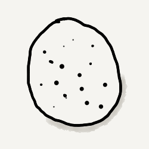
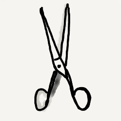

Rock, Paper, or Scissors?
"A good player predicts the next hand,
a bad player predicts the last..."

Make this choice:
Rock
Make this choice:
Paper

Make this choice:
Scissors
Player wins:
0
Computer wins:
0